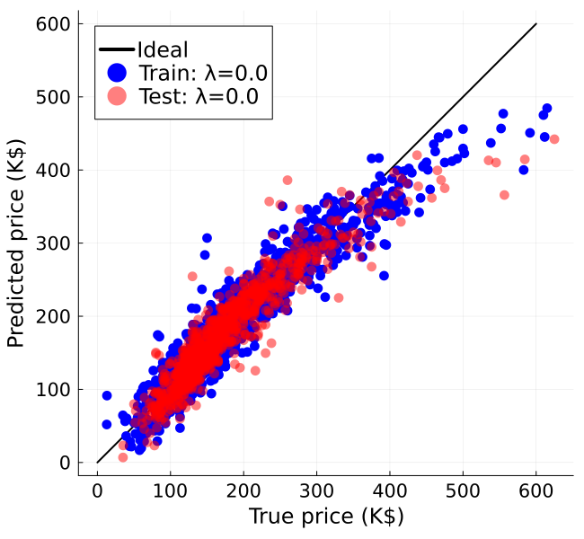
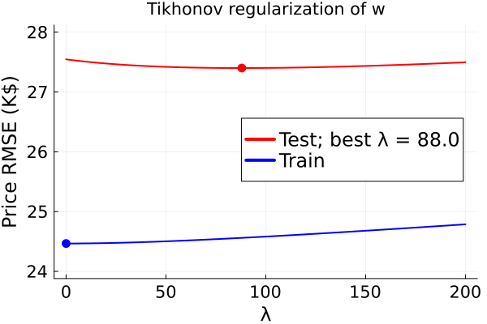

Linear regression of house prices
Illustrate linear regression using Julia.
The house price data used here originate from ASA and was copied to gitbub for convenience.
This page comes from a single Julia file: regress-house.jl.
You can access the source code for such Julia documentation using the 'Edit on GitHub' link in the top right. You can view the corresponding notebook in nbviewer here: regress-house.ipynb, or open it in binder here: regress-house.ipynb.
Setup
Add the Julia packages used in this demo. Change false to true in the following code block if you are using any of the following packages for the first time.
if false
import Pkg
Pkg.add([
"Downloads"
"LinearAlgebra"
"MIRTjim"
"NPZ"
"Plots"
"Statistics"
])
endTell Julia to use the following packages. Run Pkg.add() in the preceding code block first, if needed.
using Downloads: download
using LinearAlgebra: Diagonal
using MIRTjim: prompt
using NPZ: npzread
using Statistics: mean, std
using Plots: default, gui, plot, plot!, scatter!, savefig
default(); default(label="", markerstrokecolor=:auto, widen=true, linewidth=2,
markersize = 6, tickfontsize = 14, labelfontsize = 16, legendfontsize=16)The following line is helpful when running this file as a script; this way it will prompt user to hit a key after each figure is displayed.
isinteractive() || prompt(:draw);Data
Read data from .npy files in companion github repo
url_base = "https://github.com/JeffFessler/553data/raw/refs/heads/main/ames-housing/"
function read_npy(filename::String)
url = url_base * filename
tmp = download(url) # download from url
return npzread(tmp) # read data from the buffer
end
if !@isdefined(feature_names) # load data just once
ytrain = read_npy("train_labels.npy")
Xtrain = read_npy("train_features.npy")
ytest = read_npy("test_labels.npy")
Xtest = read_npy("test_features.npy")
ntrain = length(ytrain)
ntest = length(ytest)
# read_npy can't handle strings so use readlines from .txt file
url = url_base * "feature_names.txt"
feature_names = readlines(download(url))
end
[size(Xtrain) size(Xtest) first(feature_names) last(feature_names)]1×4 Matrix{Any}:
(58, 2000) (58, 925) "Lot.Frontage" "Total.Porch.SF"d = size(Xtrain, 1)
μtrain = mean(Xtrain, dims=2)[:,1] # feature mean
σtrain = std(Xtrain, dims=2)[:,1] # feature std dev
Xbar = [ones(1, ntrain); (Xtrain .- μtrain) ./ σtrain]; # sphere dataTikhonov regularization of weights "w" is a 1-liner:
fit_l2(λ) = (Xbar*Xbar' + λ * Diagonal([0; ones(d)])) \ (Xbar * ytrain)
λ_l2 = 0e3
theta_l2 = fit_l2(λ_l2) # regularized LS fit
predict_train = Xbar' * theta_l2;Plot predicted vs true price
for both training and test data
p2 = plot([0, 600], [0, 600]; color = :black, label = "Ideal",
size = (650, 600), aspect_ratio = 1)
scatter!(p2, ytrain, predict_train;
label = "Train: λ=$λ_l2", color = :blue,
xaxis = ("True price (K\$)", ),
yaxis = ("Predicted price (K\$)", ),
)
Xbar_test = [ones(1, ntest); (Xtest .- μtrain) ./ σtrain]
predict = Xbar_test' * theta_l2
scatter!(p2, ytest, predict; aspect_ratio = 1,
label = "Test: λ=$λ_l2", color = :red, alpha = 0.5,
xaxis = ("True price (K\$)", ),
yaxis = ("Predicted price (K\$)", ),
)
prompt()
# savefig(pd, "regress-house-predict-l2.pdf")Examine prediction RMS error vs λ
for both training and test data
λs = range(0, 200, 51)
rmse_fun(λ, Xb, y) = sqrt(mean(abs2, Xb' * fit_l2(λ) - y))
rmse_train_fun(λ) = rmse_fun(λ, Xbar, ytrain)
rmse_test_fun(λ) = rmse_fun(λ, Xbar_test, ytest)
rmse_train = rmse_train_fun.(λs)
rmse_test = rmse_test_fun.(λs)
ibest = argmin(rmse_test) # index of best λ for test data
pe = plot(; legend = :right,
title = "Tikhonov regularization of w",
xaxis = ("λ", ),
yaxis = ("Price RMSE (K\$)", (24, 28), ),
)
plot!(pe, λs, rmse_test, label = "Test; best λ = $(λs[ibest])", color = :red)
plot!(pe, λs, rmse_train, label = "Train", color = :blue)
scatter!(pe, [0], [rmse_train[findall(==(0), λs)]],
marker = :circle, color = :blue)
scatter!(pe, [λs[ibest]], [rmse_test[ibest]],
marker = :circle, color = :red)
# savefig(pd, "regress-house-rmse-l2.pdf")
This page was generated using Literate.jl.